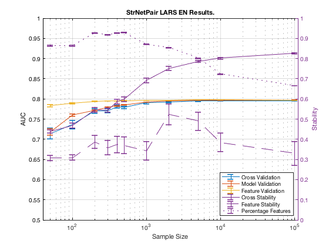

Performance on StrNetPair with LARS EN.
summary_perf('StrNetPair', 3)
Figure 9. StrNetPair LARS EN Results.
______________________________________

Table 9. StrNetPair LARS EN Results.
_____________________________________
Sample_Size p_Converge p_Next Cross_Validation_AUC Model_Validation_AUC Feature_Validation_AUC
___________ __________ _________ ____________________ ____________________ ______________________
' 50 ' ' 0.000 ' ' 0.357 ' ' 0.714 +/- 0.014 ' ' 0.719 +/- 0.007 ' ' 0.783 +/- 0.003 '
' 100 ' ' 0.000 ' ' 0.268 ' ' 0.736 +/- 0.010 ' ' 0.760 +/- 0.003 ' ' 0.789 +/- 0.001 '
' 200 ' ' 0.000 ' ' 0.402 ' ' 0.771 +/- 0.006 ' ' 0.772 +/- 0.002 ' ' 0.794 +/- 0.000 '
' 300 ' ' 0.000 ' ' 0.352 ' ' 0.771 +/- 0.004 ' ' 0.780 +/- 0.001 ' ' 0.795 +/- 0.000 '
' 400 ' ' 0.000 ' ' 0.437 ' ' 0.781 +/- 0.004 ' ' 0.783 +/- 0.001 ' ' 0.795 +/- 0.000 '
' 500 ' ' 0.000 ' ' 0.338 ' ' 0.779 +/- 0.003 ' ' 0.786 +/- 0.001 ' ' 0.796 +/- 0.000 '
' 1000 ' ' 0.123 ' ' 0.395 ' ' 0.791 +/- 0.002 ' ' 0.792 +/- 0.000 ' ' 0.797 +/- 0.000 '
' 2000 ' ' 0.212 ' ' 0.377 ' ' 0.792 +/- 0.002 ' ' 0.795 +/- 0.000 ' ' 0.797 +/- 0.000 '
' 5000 ' ' 0.377 ' ' 0.375 ' ' 0.795 +/- 0.001 ' ' 0.796 +/- 0.000 ' ' 0.797 +/- 0.000 '
' 10000 ' ' 0.433 ' ' 0.433 ' ' 0.796 +/- 0.001 ' ' 0.797 +/- 0.000 ' ' 0.797 +/- 0.000 '
' 100000 ' ' NaN ' ' NaN ' ' 0.796 +/- 0.000 ' ' 0.797 +/- 0.000 ' ' 0.797 +/- 0.000 '
Sample_Size Cross_Stability Number_Features Feature_Stability Dataset_Feature_Size
___________ ___________________ _____________________ ___________________ _______________________
' 50 ' ' 0.439 +/- 0.008 ' ' 16.230 +/- 0.527 ' ' 0.306 +/- 0.012 ' ' 45.800 +/- 0.105 '
' 100 ' ' 0.469 +/- 0.011 ' ' 16.336 +/- 0.616 ' ' 0.308 +/- 0.014 ' ' 45.800 +/- 0.113 '
' 200 ' ' 0.547 +/- 0.013 ' ' 20.484 +/- 0.695 ' ' 0.386 +/- 0.033 ' ' 49.140 +/- 0.082 '
' 300 ' ' 0.545 +/- 0.010 ' ' 18.992 +/- 0.656 ' ' 0.358 +/- 0.036 ' ' 48.640 +/- 0.089 '
' 400 ' ' 0.588 +/- 0.012 ' ' 19.818 +/- 0.565 ' ' 0.374 +/- 0.041 ' ' 49.180 +/- 0.044 '
' 500 ' ' 0.600 +/- 0.012 ' ' 19.594 +/- 0.611 ' ' 0.370 +/- 0.043 ' ' 49.260 +/- 0.044 '
' 1000 ' ' 0.692 +/- 0.011 ' ' 17.852 +/- 0.653 ' ' 0.343 +/- 0.047 ' ' 46.160 +/- 0.101 '
' 2000 ' ' 0.752 +/- 0.010 ' ' 16.778 +/- 0.502 ' ' 0.524 +/- 0.053 ' ' 45.340 +/- 0.072 '
' 5000 ' ' 0.787 +/- 0.004 ' ' 14.718 +/- 0.382 ' ' 0.491 +/- 0.045 ' ' 42.520 +/- 0.054 '
' 10000 ' ' 0.803 +/- 0.005 ' ' 10.774 +/- 0.353 ' ' 0.385 +/- 0.046 ' ' 38.340 +/- 0.055 '
' 100000 ' ' 0.826 +/- 0.003 ' ' 8.246 +/- 0.160 ' ' 0.330 +/- 0.059 ' ' 35.300 +/- 0.022 '